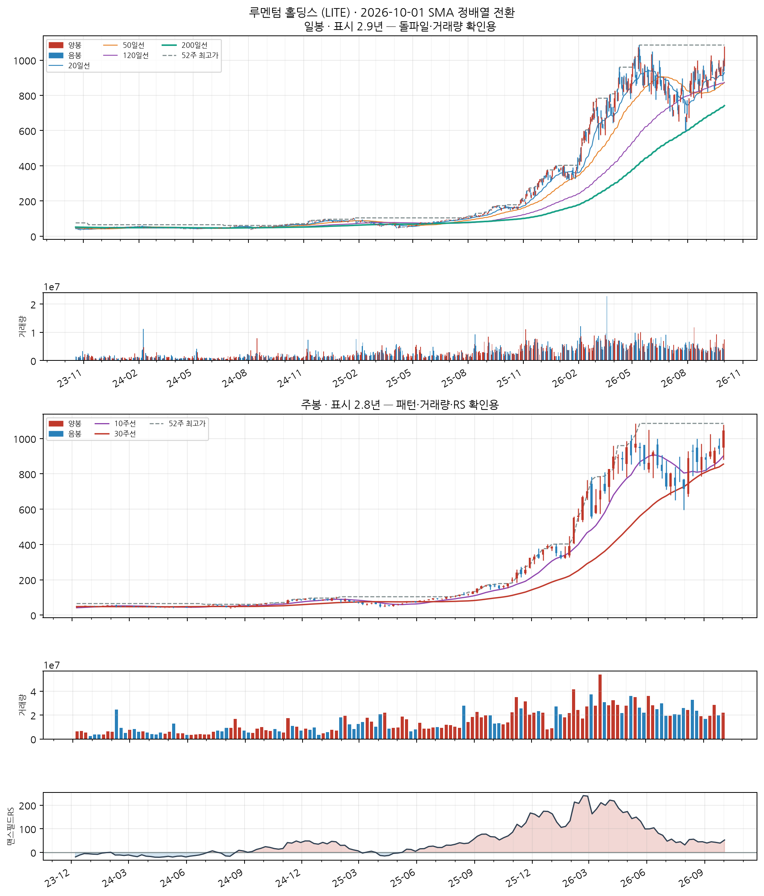

루멘텀 홀딩스 (LITE)
신규 NASDAQInformation Technology
업종 참고: RS 평균 72/99(업종 중 상위 1%) · 오늘 신호 12건 · 업종 평균이 나스닥종합 대비 +18.1%p(126일), 종목별 편차 ±52%p
🧪 자체 섹터 분류(실험적, 참고용): Information Technology (Semtech·SiTime 등 12종목)
섹터 내 RS 순위: 4/12위 (RS 84/99)
섹터 1~3위: Semtech(97), SiTime(96), Vicor Corporation(96)
※ 자체 상관관계 계산(최근 1년) — 검증 시 기준업종 11개 중 8개 정확. 주 단위로 구성종목이 일부 바뀔 수 있음(주간 일치도 실측 0.53)
섹터 내 RS 순위: 4/12위 (RS 84/99)
섹터 1~3위: Semtech(97), SiTime(96), Vicor Corporation(96)
※ 자체 상관관계 계산(최근 1년) — 검증 시 기준업종 11개 중 8개 정확. 주 단위로 구성종목이 일부 바뀔 수 있음(주간 일치도 실측 0.53)
종가 $1,045.78
정배열 1일차거래량비 1.6x정배열 후 +0.0%

📐 차트 패턴 판정: 후보 없음 후보 없음 판정 기준(PDF)
세 패턴 모두 필수 조건을 채운 후보가 없다(가장 가까운 컵위드핸들 후보: U자 모양: 바닥 형태(3주 중앙값 평활): 직선 V 템플릿 오차 0.098 vs 포물선 U 템플릿 오차 0.190 → 치우침 -0.092 (V=−0.167·U=+0.167, 기각 ≤-0.05·충족 ≥+0.05) · 바닥 중심 위치 47% — 바닥에서 완만해지는 구간 없이 한 점에서 꺾이는 V자).
가장 강한 반증 컵위드핸들: U자 모양: 바닥 형태(3주 중앙값 평활): 직선 V 템플릿 오차 0.098 vs 포물선 U 템플릿 오차 0.190 → 치우침 -0.092 (V=−0.167·U=+0.167, 기각 ≤-0.05·충족 ≥+0.05) · 바닥 중심 위치 47% — 바닥에서 완만해지는 구간 없이 한 점에서 꺾이는 V자
경쟁 후보·더 단순한 설명 더 단순한 설명: 최근 26주 상승 추세 지속(+34.0%) — 베이스 없음
추가로 필요한 데이터 장중 고저 기준 깊이(여기 수치는 주봉 종가 기준) · 이번 주 완결 주봉(2026-10-02 라벨) — 미완결이라 판정에서 제외
패턴만으로 매수 추천이나 목표 달성 확률을 만들지 않습니다. 수치 기준은 잠정치이며 라벨 데이터로 검증되지 않았습니다.
C
C — 분기 실적 성장 우수
2026 분기(10-Q) · 순이익 흑자전환($-44M→$+144M) · EPS 흑자전환($-0.6→$+1.5) · 매출 +90.1%
SEC EDGAR(10-Q/10-K) 기준 · 분기 단독 전년동기 대비 · 직전 분기보다 성장률이 높아짐(가속)
A
A — 연간 실적 성장 미흡
2026 연간(10-K) · 순이익 적자전환($+26M→$-6,935M) · EPS 적자전환($+0.4→$-93) · 매출 +83.2%
SEC EDGAR(10-Q/10-K) 기준 · 연간 전년동기 대비 · 최근 3년 연속 증가는 아님 — 오닐 A 기준 미충족으로 한 단계 낮춤
N
N — 신고가·모멘텀 데이터 없음
신고가 데이터 없음
S
S — 수급(거래량) 우수
20일 평균 대비 1.64배
유통주식수·순매수 데이터는 미보유 (거래량으로만 근사)
L
L — 주도주(상대강도) 우수
RS 등급 84/99 (126거래일 ≈ 6개월 기준 · 유니버스 952종목 중 백분위) · 지수대비 +6.2%p
상위 시가총액 유니버스 기준 — KRX 전체 대비 백분위 아님 · 오닐의 RS Rating은 52주 기준이지만 여기는 126거래일로, 같은 리포트의 6개월 모멘텀과 기간을 맞춘 값이다(원전과 다름)
I
I — 기관·외국인 수급 데이터 없음
미국 종목은 기관 수급 데이터 소스 없음 (SEC Form 13F는 최대 45일 지연되는 분기 스냅샷이라 부적합)
M
M — 시장방향 양호
IXIC 지수가 60일선 위
**오닐의 M(분산일·추종일 계수)이 아니라 지수의 이동평균 상회 여부**를 쓴 대용값이다 · 실제 매매 필터로는 미적용(표시 전용) — 종목 선별보다 지수 자체 타이밍이 더 효율적이라는 자체 검증 결과 있음 (reports/vs_kospi.md)